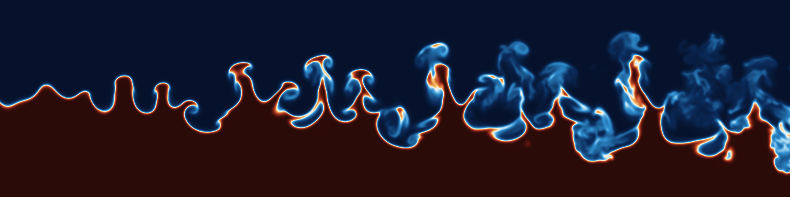

CompactLES.jl
CompactLES solves the compressible, multicomponent Navier–Stokes equations for large-eddy simulation (LES) and direct numerical simulation (DNS). It combines high-order compact finite differences, a compact filter, localized artificial fluid properties, low-storage Runge–Kutta time integration, and compact line solves distributed over MPI ranks.

A calculation is specified in two parts. A Problem holds the physics: equation of state, transport, geometry, boundary conditions, sources, and initial state. A Numerics holds the grid, the algorithms, the CFL number, and the process decomposition. One problem can therefore be studied at several resolutions without rewriting its physics.
The method in brief
- Derivatives. A compact (Padé) scheme obtains each derivative by solving a banded linear system along a grid line. For the same stencil width it resolves much shorter waves than an explicit difference. The default is Lele's sixth-order tridiagonal scheme; eighth- and tenth-order operators are available. See Discretization.
- Regularization. Compact schemes have almost no numerical dissipation, so a shock or an unresolved eddy would otherwise produce grid-scale oscillations. An eighth-order compact filter damps the shortest wavelengths everywhere, and artificial viscosity, conductivity, and diffusivity, set by high-order derivatives of the solution, are large only where the grid does not resolve the flow. No Riemann solver or limiter is used. See Filtering and artificial properties.
- Time integration. The five-stage, fourth-order low-storage Runge–Kutta scheme of Carpenter and Kennedy, with the step set by a CFL number.
- Parallelism. The grid is divided into blocks, one per MPI rank, with threads within a rank. Because a compact derivative couples every point on a line, the banded systems are solved across rank boundaries exactly. See Parallel compact solve.
- Boundaries and geometry. Walls, symmetry planes, and characteristic (NSCBC) inflow and outflow; Cartesian, cylindrical, and spherical coordinates, with regularized axes, origins, and poles. See Open boundaries and Curvilinear coordinates.
Choose a path
- Learn by running a calculation. Begin with Coalescing shock, a one-dimensional sound wave that steepens into a shock, checked against its exact solution.
- See longer calculations against references. The examples, starting with Shock-capturing tests, show figures computed once and stamped with the commit and settings that produced them.
- Build an input deck quickly. The Cheat sheet lists every constructor with its defaults and gives common recipes.
- Complete a specific task. The how-to guides show how to Define a problem, Choose boundary conditions, Control a run, Write output and restart, and Run in parallel.
- Understand the model. Start with Governing equations, then read the explanation pages on discretization, regularization, thermodynamics, geometry, open boundaries, and the parallel algorithms.
- Look up exact behavior. The reference section documents the exported input and runtime API, the advanced numerical and extension APIs, and, for cross-references only, developer internals.
How the tutorials build
Each tutorial adds one layer to the calculations before it:
- Coalescing shock: the state, the grid, time advancement under a CFL limit, and output.
- Shock tube: multicomponent gases, initial conditions built from regions, and shock regularization.
- Acoustic interface: regions whose state varies in space, and a sound pulse crossing the interface between two gases.
- Sound absorption: molecular viscosity and heat conduction.
- Loschmidt cell: binary diffusion from tabulated coefficients, measured back from the decay of a composition mode.
- Richtmyer–Meshkov instability: a second grid dimension, symmetry planes, and characteristic inflow and outflow faces; the growth of a shocked interface compared with Richtmyer's model.
- Rayleigh–Taylor instability: a body force and an initial state in hydrostatic balance with it; the growth of a diffuse interface compared with linear theory.
- Supernova remnant: a spherical grid resolved in radius alone and continued through its origin, in astrophysical units; the blast wave compared with the Sedov–Taylor solution.
- Imploding shock: a refined level that follows a shock converging on the axis of a cylinder; the shock trajectory compared with Guderley's self-similar law.
- Advected bubbles: a refined level made of tiles, following three bubbles of different gases across the periodic faces of a box; each compared with its exact, translated shape.
- Axis-crossing vortex: a cylinder with the angle resolved, an exact solution held on its outer boundary, and a vortex carried across the axis.
- Oscillating sphere: a spherical grid with the polar angle resolved and the flow continued through the poles; the sound radiated by an oscillating sphere compared with the exact dipole field.
The tutorials explain enough to run and interpret each calculation. For the mathematical development, read Governing equations and then Discretization; the later explanation pages treat the regularization, thermodynamics, and geometry introduced along the way in more depth.
Prerequisites and conventions
The manual assumes graduate coursework in fluid mechanics, thermodynamics, vector calculus, and numerical methods for partial differential equations, and enough Julia to write and run a script. The methods particular to this solver are introduced where they first appear, and Run in parallel covers launching a calculation on several processes.
Inputs may be in SI units or consistently nondimensional. The package does not attach units to values, so a mixture of unit systems is not detected.
Scope
The equations carry one temperature and have no built-in reactions. Molecular transport uses constant properties or temperature-dependent CEA fits, with unity-Lewis diffusion or mixture-averaged diffusion from supplied binary data. For neutral gas pairs, that binary data is bundled as fitted polynomial correlations, and states outside a fit's temperature range are rejected at run time; see Thermodynamics and transport.
Cartesian, cylindrical, and spherical coordinates are available, including regularized axes, origins, and poles. Unstretched Cartesian and axisymmetric r-z runs also support nested refinement, lattice tiles, dynamic regridding, and optional Berger–Oliger subcycling. AMR collects region selection, tagging, and time stepping. CPU and GPU backends both support MPI decomposition and refined layouts. Adaptive mesh refinement describes their setup and restrictions.
These capabilities are not all equally mature. Refinement corrects the fluxes across a coarse–fine interface to conserve the composite totals only where a feature the coarse grid does not resolve crosses it, and only on the CPU backend. Elsewhere, filtering and interface coupling can change the composite conserved totals by amounts that decrease as the grid is refined. Each explanation page states the evidence for its methods and their limitations.